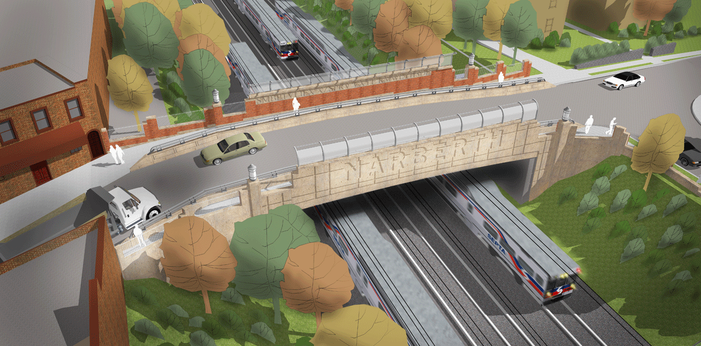
Narberth Avenue Bridge
Reconstruction of transportation infrastructure as a physical and civic community connection.
- Type: Infrastructure, Professional Work
- Date: Spring 2015 - Summer 2016
- Location: Narberth, Pennsylvania, USA
- Size: 70 ft (22 m) span steel plate girder bridge
- Role: Project Architect, Consultant to Lead Engineers
- Team: Dan McCoubrey (Principal)
The demands on infrastructure in Pennsylvania has reached a critical point, with transportation demands rising ever higher. Most notably, the state has the greatest proportion of “structurally deficient” bridges of any of the United States. The existing bridge spanning over the Paoli/Thorndale Regional Rail Line is one of the many deficient bridges with a National Bridge Inventory rating of 17 out of 100 and requires new construction. Erected in 1902, the original bridge served the historic Main Line of the Pennsylvania Railroad and was a civic connector between the towns of Merion and Narberth. The project is influenced by the significant history of the railroad in this region, and connects to the times when infrastructure was a matter of civic pride. The architectural ornamentation includes integral public art from local sculptors that helps to connect the project to the community, using the built components as elements to communicate and symbolize civic ideas and concepts.
My responsibilities on this project included the generation of design concepts as well as complete documentation, specification, and coordination of the architectural details. Acting as a consultant to the lead engineers, the details needed to comply with rigorous and precise requirements set by the structural needs as well as transportation and rail authorities. I was also responsible for the integration of the integral public art, ensuring the design intent was compatible with manufacturing and technical requirements of the artist and cast stone supplier.
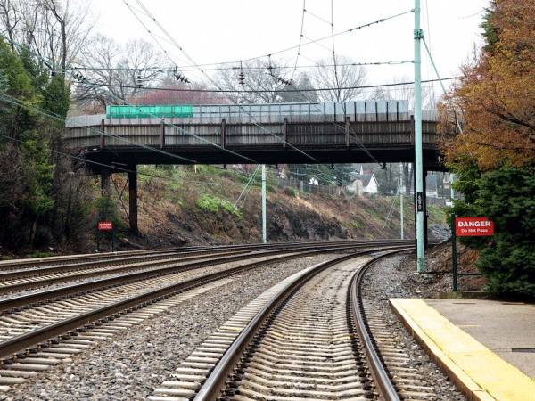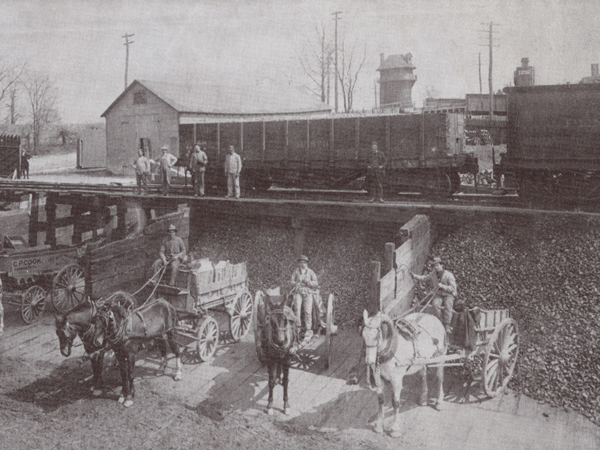
Existing Pennsylvania Railroad bridge built in 1902
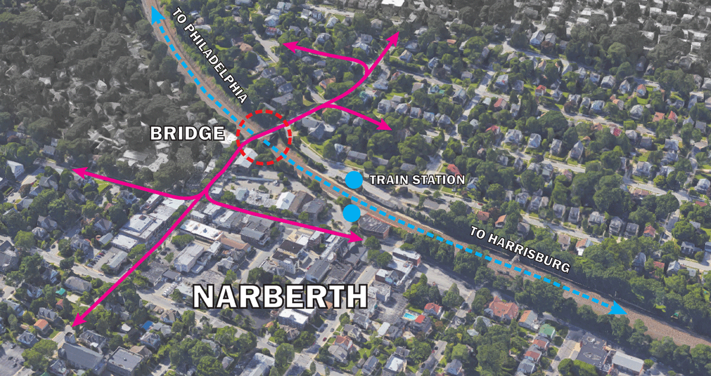
Site context and aerial view
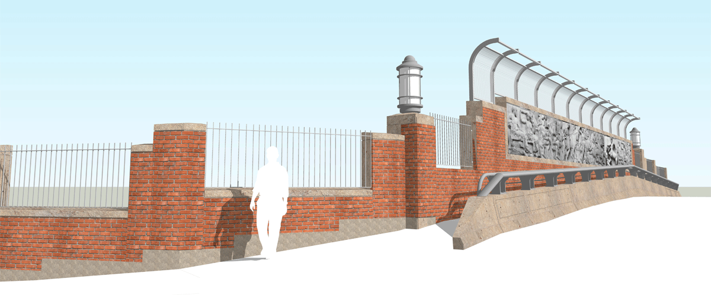
View along roadway with view of cast stone bas-relief mural to be done by local civic artist
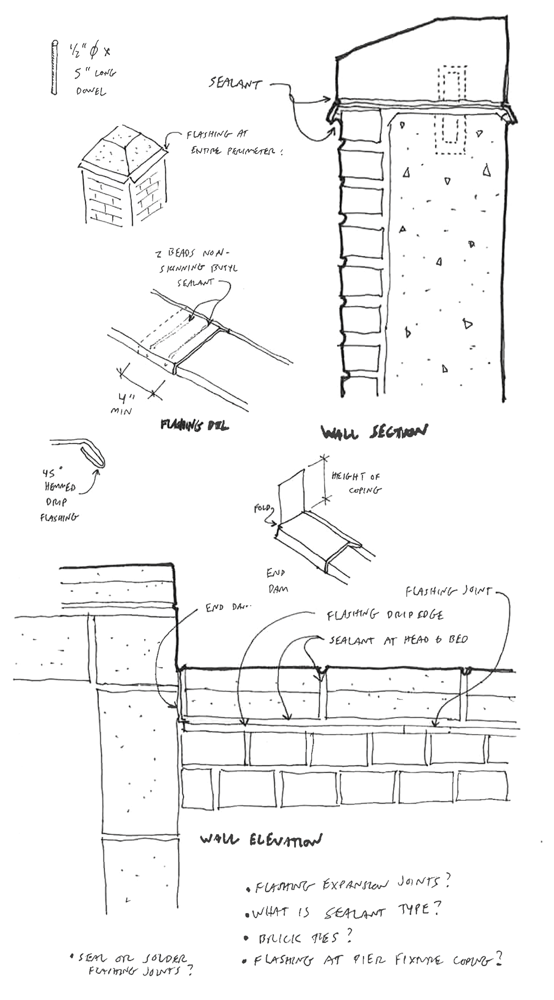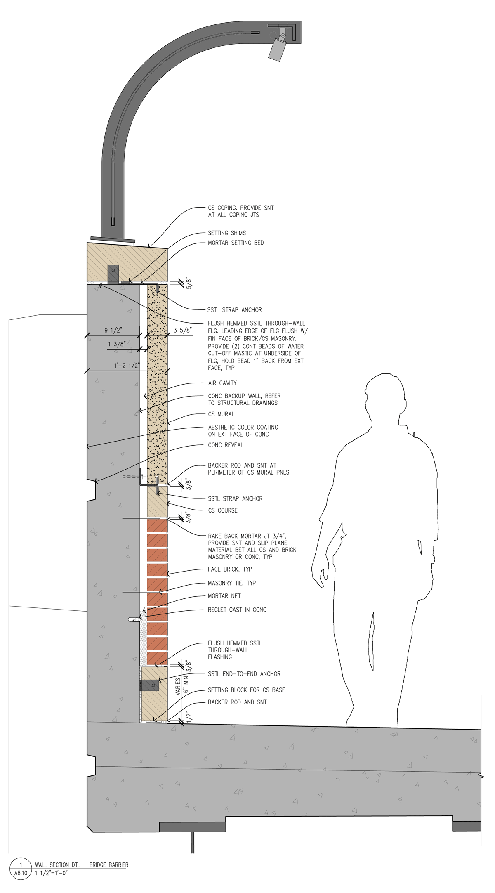
Bridge barrier wall section and design sketches
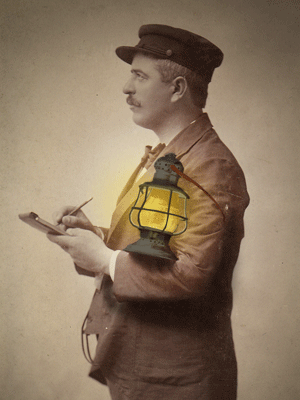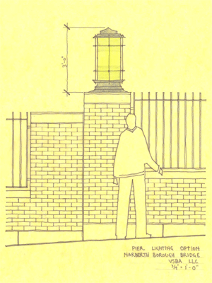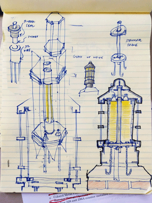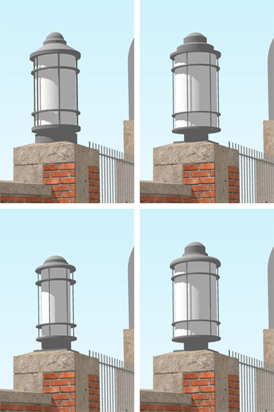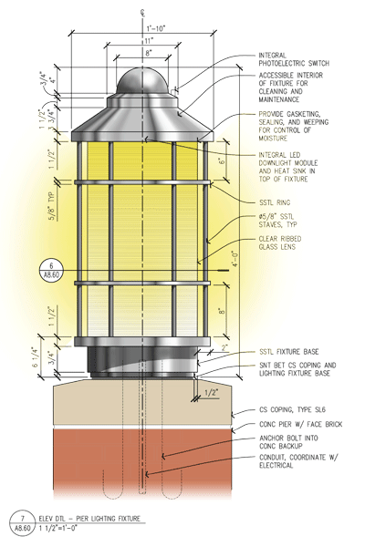
Custom pier mounted lighting fixture design process